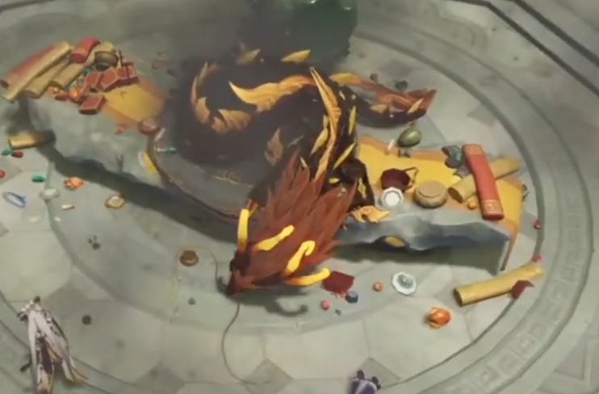
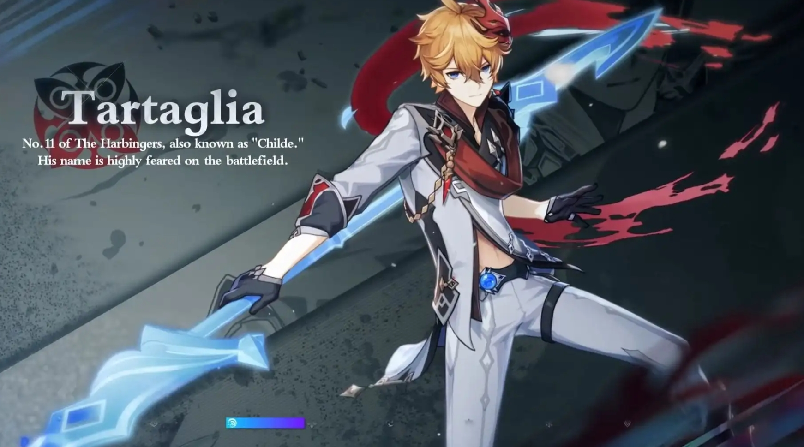
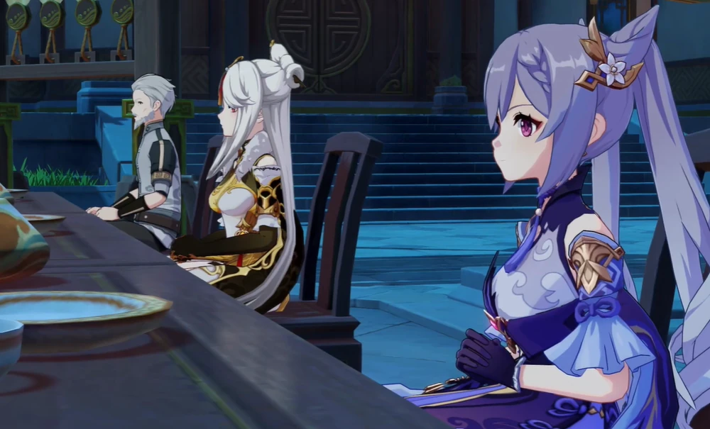
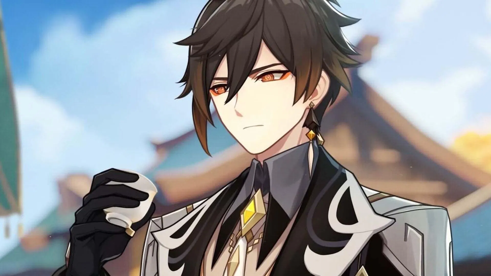
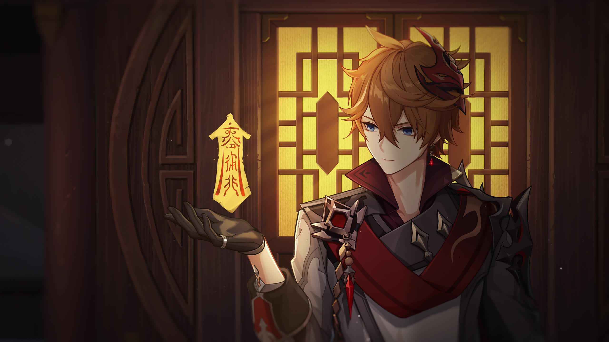
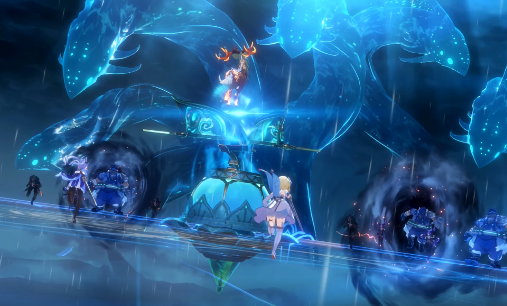
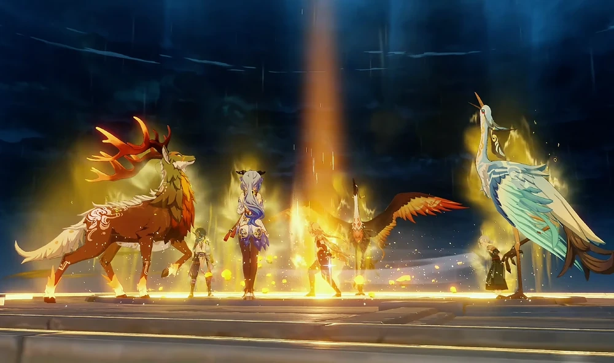

| Historia |
|---|
1.Llegada a Liyue y el Rito del Descenso El Viajero y Paimon llegan a Liyue Harbor justo a tiempo para presenciar el Rito del Descenso, una ceremonia anual en la que el Arconte Geo, Morax, entrega sus decretos a los habitantes. Sin embargo, durante el evento ocurre lo impensable: un monstruo ataca y el cuerpo del Arconte cae sin vida frente a todos. El Viajero es acusado de estar involucrado y se ve obligado a investigar la verdad para limpiar su nombre. |
2.Encuentro con Childe En medio del caos, aparece Tartaglia (Childe), el Undécimo de los Fatui. Aunque pertenece a una organización peligrosa, se muestra sorprendentemente amistoso y ofrece su ayuda al Viajero. Sin embargo, sus intenciones no están del todo claras. Él guía al Viajero hacia los Siete Estrellas de Liyue, quienes han tomado el control de la situación tras la muerte del Arconte. |
3.Las Siete Estrellas y la sospecha Las Siete Estrellas —los líderes políticos de Liyue— deciden cerrar la ciudad y manejar el asunto sin intervención externa. El Viajero descubre que ellos sabían que Morax podría morir algún día y habían preparado planes para mantener la estabilidad. Sin embargo, se niegan a revelar detalles, lo que aumenta las sospechas sobre su papel en la tragedia. |
4.Conocer a Zhongli Childe presenta al Viajero a Zhongli, un erudito de la funeraria Wangsheng. Él explica las tradiciones funerarias de Liyue y revela que se está preparando un funeral para el Arconte Geo. Zhongli se convierte en un aliado clave, guiando al Viajero a través de la historia y cultura de Liyue mientras investigan la verdad detrás de la muerte de Morax. |
5.El misterio del Rex Lapis El Viajero descubre que la muerte de Morax no fue un simple asesinato. Hay pistas que apuntan a una conspiración más profunda, relacionada con contratos antiguos, la historia de Liyue y los Fatui. Mientras tanto, Childe presiona para obtener acceso al poder del Arconte Geo, lo que revela sus verdaderas intenciones. |
6. El plan de Childe Childe engaña al Viajero y activa un antiguo artefacto para liberar al monstruo marino Osial, una criatura sellada por Morax hace miles de años. Su objetivo es crear caos para obligar a los Siete Estrellas a entregar la Gnosis Geo. La ciudad entra en estado de emergencia mientras las fuerzas de Liyue luchan por contener la amenaza. |
7. La batalla en el Puerto de Liyue Los Adeptus —seres divinos que protegieron Liyue durante siglos— se unen a los humanos para defender el puerto. El Viajero participa en la batalla, ayudando a contener a Osial y sus secuaces. Es un momento histórico: por primera vez, humanos y adeptus luchan juntos como iguales. |
8.La verdad sobre Zhongli
Tras la batalla, Zhongli revela la verdad: él es Morax, el Arconte Geo. Fingió su muerte como parte de un contrato con la Tsaritsa de Snezhnaya. Su objetivo era observar si Liyue podía mantenerse en pie sin su protección. La Gnosis Geo fue entregada voluntariamente a los Fatui como parte del acuerdo. |
9. Conclusión del arco de Liyue.png)
Zhongli renuncia a su papel como Arconte y decide vivir como un mortal. Agradece al Viajero por su ayuda y le aconseja viajar a Inazuma, donde podría encontrar nuevas pistas sobre su hermano/a. Con Liyue en paz y su gente demostrando su fortaleza, el Viajero continúa su viaje hacia el este. |
.png)
.png)